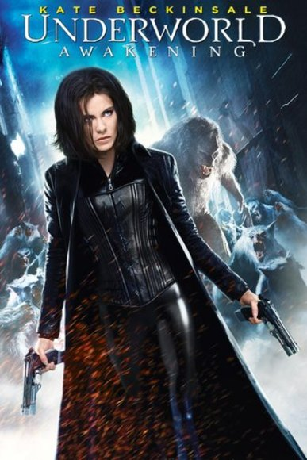

One of My Favorite Movies...!!!

Underworld tells the story of Selene (Kate Beckinsale), a Death Dealer bent on destroying the Lycans who allegedly killed her family. She discovers that the lycans are pursuing a human, Michael Corvin, for experimentation; Selene captures Michael herself to find out what the lycans are up to. Along the way, Selene not only discovers a mutinous plot to destroy the vampire Elders, but also a shocking revelation about her father figure Elder, Viktor.
The vampires and Lycans are not supernatural creatures, but rather the product of a virus.
It is revealed in the film that Alexander Corvinus is the first of the vampire and lycan lines. He was the only survivor of a plague that wiped out his village. Somehow, his body was able to mutate the virus, mold it to his own benefit. He had three sons, two of whom inherited their father's immortality and were bitten, one by bat and one by wolf, creating the vampire and werewolf lines. Corvinus' third son, who did not inherit immortality, also carried the Corvinus Strain as an exact duplicate of the original virus, hidden away in his genetic code and passed along to his human descendants through the centuries. This, according to Singe, is the key to creating a hybrid.